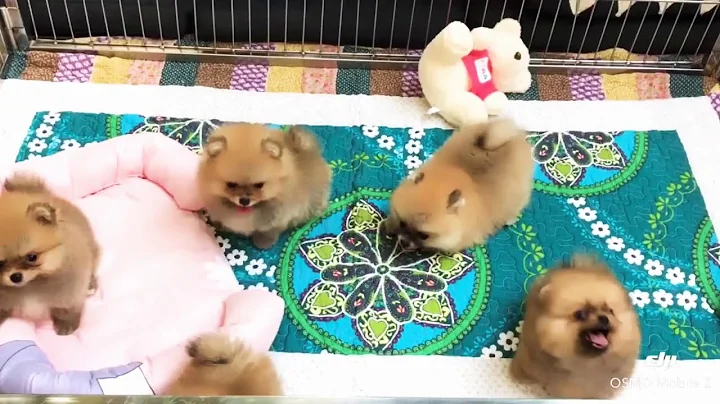

19:20
Playing with 200 Pomeranian By Royal Canin
168K views · 1 year ago
7:38
Can we pet Pomeranian in a Condo?
3.2K views · 1 year ago
8:12
วิธีรับมือกับน้องปอมจอมแสบที่บ้าน ที่เห่าได้เห่าดี จนมี๊ ๆ ทนไม่ไหว ทำตาม...
160K views · 3 years ago

4:37
ปอมหน้าหมี เปรียบเทียบ อธิบาย กันชัดๆ แต่ละตัวสวยยังไง
40K views · 4 years ago
2:51
8 week old Pomeranian puppies!
8.7M views · 14 years ago
10:31
What dogs do while you’re not home? | Pomeranian home alone
360K views · 3 years ago